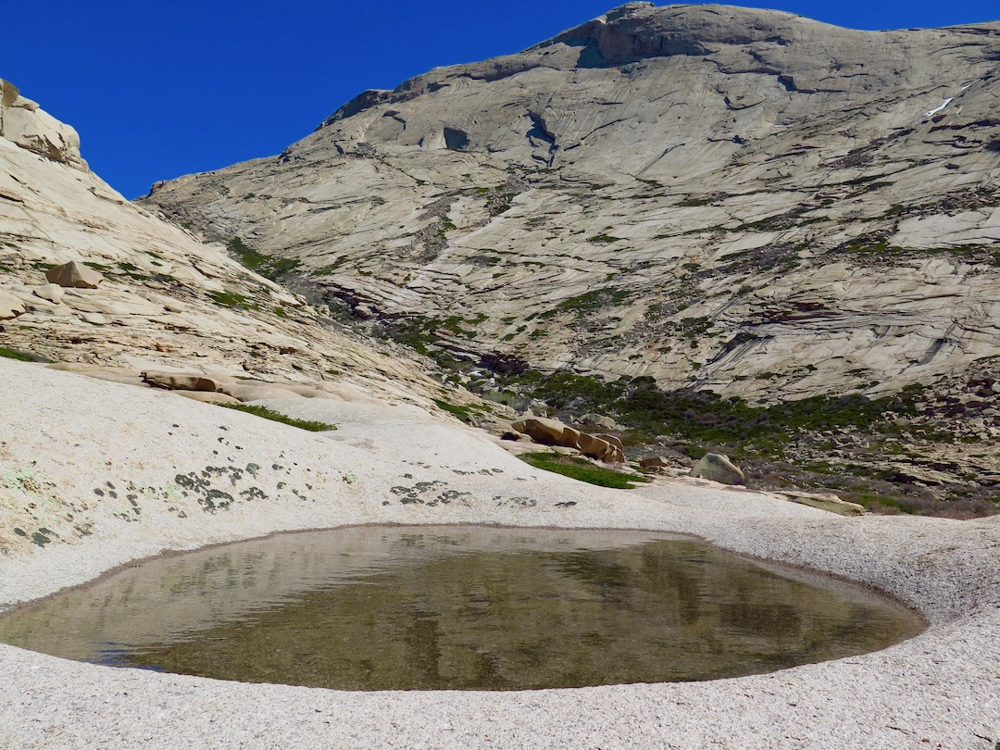
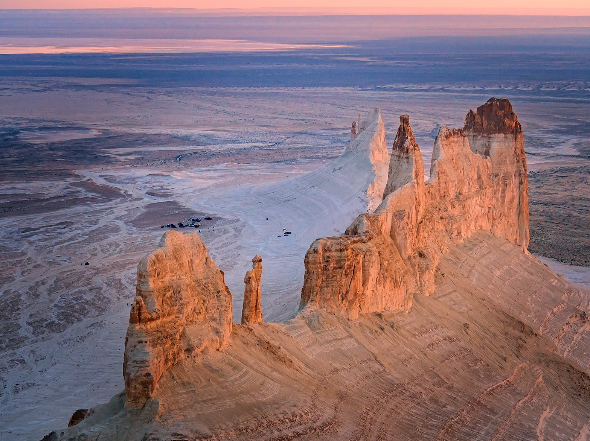
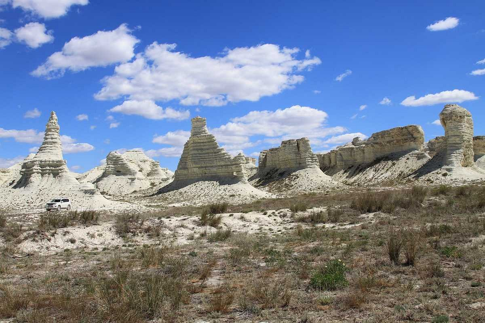
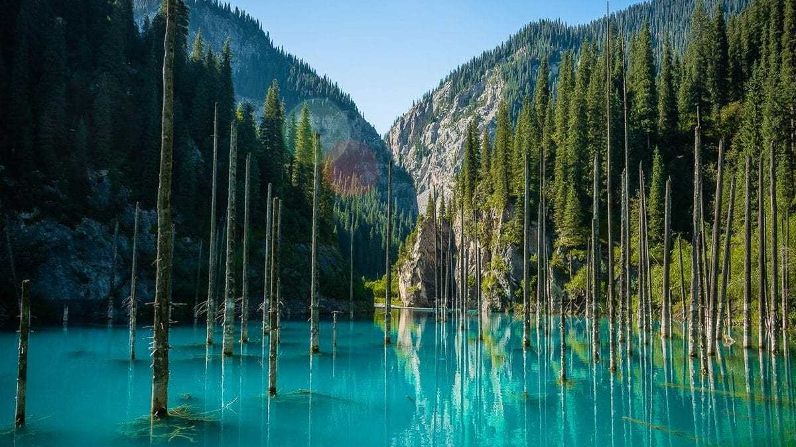

Unexplored Locations of Kazakhstan
Discover pristine natural monuments, alien-like landscapes, and sacred places.
01. Bektau-Ata Volcanic Oasis

Region: Karaganda Region | Category: Volcanic Massif
A unique volcanic mountain range rising from the flat Kazakh steppe. Famous for its surreal granite formations and subterranean water caves.
Key Highlights & Features:
- The Sacred Cave: Deep natural cavern with an underground freshwater spring.
- Granite Waves: Smooth rock formations carved by ancient wind and water erosion.
- Flora & Fauna: Rare mountain plants growing inside micro-canyon crevices.
02. Bozzhyra Tract

Region: Mangystau Region | Category: Chalk Canyons
A striking white limestone canyon situated on the Ustyurt Plateau, created by the ancient ocean bed millions of years ago.
Key Highlights & Features:
- Fang Mountains: Iconic vertical chalk pinnacles rising over 200 meters.
- Mars-like Desert: Expansive white plateaus with panoramic viewpoints.
- Ancient Fossils: Prehistoric shark teeth and marine shells embedded in chalk walls.
03. Akkergeshen Plateau

Region: Atyrau Region | Category: Chalk Outcrops
Unique snow-white chalk mountain deposits known for weirdly shaped limestone towers and ancient geological fossils.
Key Highlights & Features:
- Chalk Towers: Natural limestone pillars resembling castles and sphinxes.
- Paleontological Site: Fossilized ocean life remains visible right underfoot.
- Off-Road Expedition: Remote terrain perfect for adventure travel.
04. Kaindy Sunken Forest

Region: Almaty Region | Category: Alpine Lake
A mountain lake created by an earthquake in 1911, famous for dried spruce trunks emerging vertically from turquoise waters.
Key Highlights & Features:
- Underwater Forest: Preserved pine branches visible beneath clear glacier water.
- Alpine Scenery: Surrounded by dense Tian Shan mountain forests.
- Trekking Trails: Scenic mountain hiking paths leading around the gorge.
Project created by: Yerkenkyzy Aruzhan, Ilyas Samal, Saparova Mereilim
Group SE-2502 | Astana IT University © 2026